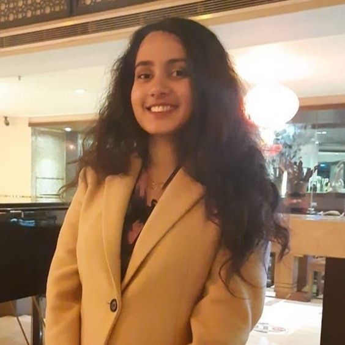

Ongoing
Interpretable Video Saliency
Designed for contextual reasoning between matched concept prototypes in the same frame to explain saliency maps for videos

Computer Vision · Multimodal Learning · Saliency · Medical AI
My research explores deep learning for image, video, and multimodal data, with particular interests in saliency prediction, interpretable visual models, multimodal learning, and medical AI.
PhD in Computer Science and Engineering · University of South Florida
Graduate Researcher · CSAIL Lab · Advised by Dr. Seungbae Kim
About
I am a PhD researcher in Computer Science and Engineering at the University of South Florida, where I work in the CSAIL Lab under Dr. Seungbae Kim. My research focuses on computer vision, multimodal learning, saliency prediction, and medical AI.
I develop and evaluate deep learning systems for image, video, audio, and multimodal data using Python and PyTorch. My work spans saliency ranking, multimodal language-model behavior, cognitive-impairment detection, deepfake detection, and intelligent visual systems.
Selected Research
Research spanning visual saliency, multimodal systems, medical AI, and robust model understanding.
Designed for contextual reasoning between matched concept prototypes in the same frame to explain saliency maps for videos
Use of object-referential senetences from image captions as spatial text priors and visual feature refinement to guide visual object-level saliency ranking detection..
Study of how quantization can alter the behavior of multimodal large language models, with attention to shifts in abstention and instability in model outputs.
A multilingual multimodal approach for mild cognitive impairment detection developed for the Interspeech 2024 TAUKADIAL Challenge.
Publications
WACV 2027
KDD 2026 Workshops
Interspeech 2024
ICCA 2022
ICCIT 2022
ICREST 2021
An iOS driving assistant that scores routes with a time-aware crime-prediction model and monitors road and driver conditions. The project includes temporal drowsiness detection and on-device vehicle, pedestrian, driver-attention, and lane-detection components.
Explored transformer-based visual memory modeling for agents in a competitive multi-agent environment, using transformer augmentation to improve long-range observation processing and decision-making.
A deep learning system for distinguishing real and synthetic speech, with model training and evaluation pipelines designed for voice deepfake detection.
An automated camera system using facial recognition to follow a selected face, with a microprocessor-controlled rotation mechanism that adjusts camera direction based on face movement.
Experience
Conduct research in computer vision, multimodal learning, saliency prediction, and medical AI; develop deep learning models for image, video, and multimodal data; and implement model training and evaluation pipelines using Python and PyTorch.
Worked on REVE Conference and ICX Media, developing Android functionality, screen sharing, and client-server audio/video transmission features while contributing to media infrastructure scaling from approximately 10,000 to more than 40,000 concurrent calls.
Technical Skills
A blend of machine learning, computer vision, software engineering, and systems experience.
Academic background
PhD in Computer Science and Engineering, University of South Florida · BSc in Computer Science and Engineering, Khulna University of Engineering & Technology.
Documents
Research-focused and industry-focused versions.
Contact
Connect by email, GitHub, LinkedIn, or Google Scholar.